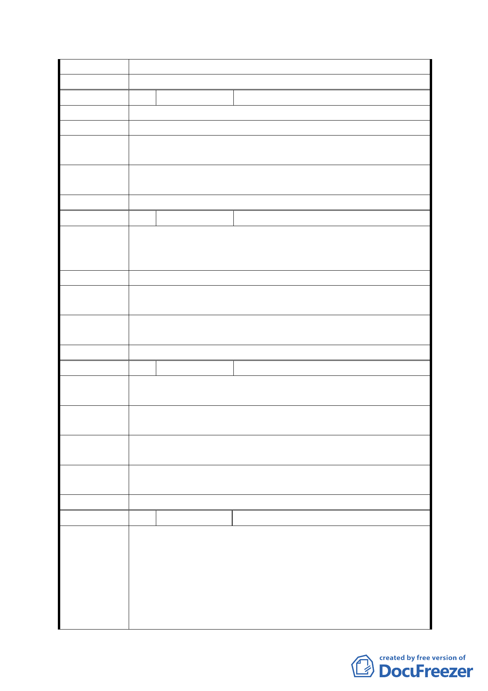

回應說明
委員會決議 同意依「市府修正後回應說明」辦理
編 號 43 陳情人
徐標
陳 情 理 由 不要貯留池
建 議 辦 法 遷公墓取代治水成效。
第五次專案小組
審查結論
同編號 1
市府修正後
回應說明
同編號 7、9
委員會決議 同意依「市府修正後回應說明」辦理
編 號 44 陳情人
江滿英
1. 遷移墳墓。
陳 情 理 由 2. 搬軍營。
3. 不要貯留池
建 議 辦 法 移公墓取代貯留池。
第五次專案小組
審查結論
同編號 1
市府修正後
回應說明
同編號 7、9
委員會決議 同意依「市府修正後回應說明」辦理
編 號 45 陳情人
謝麗貞
陳情理由
提昇社區文藝活動及康樂文康，保有運動休閒的場所，提高
生活品質。
建議
辦
法
改建成辛亥圖書館或里民文康活動中心，包括圖書館(室)、
桌球等健康體操設施。
第五次專案小組
審查結論
同編號 1
市府修正後
回應說明
同編號 7、18
委員會決議 同意依「市府修正後回應說明」辦理
編 號 46 陳情人
中埔山步道協會、辛亥生活圈行動聯盟
遷軍營，創造〝辛亥門戶公園〞
1.反對市府現行規劃，創造辛亥門戶公園
現址辛亥國高中預定地的〝木材行、修車廠＋軍營〞，因
陳 情 理 由 為教育局不再興建，將改為〝水泥箱式貯留池＋軍營永
留〞的用地。
這樣不完善的規劃，興昌里的未來發展，將如同下錯一
步棋全盤皆墨，變的遙不可及！
- 37 -